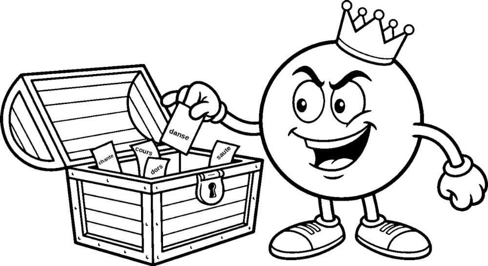
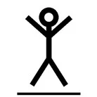
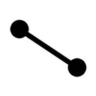
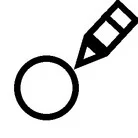
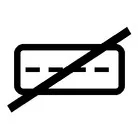
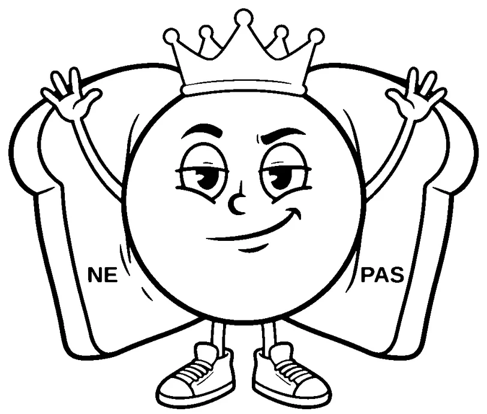

ÉTUDE DE LA LANGUE
Au pays des mots – Épisode 1
colorie en rouge
LE VERBE

Prénom : ……………………………………………………
Classe : ……………………………………………………
Au pays des mots – Épisode 1 · Le verbe


1. Lis les mots. Fais l'action.Au pays des mots – Épisode 1 · Le verbe

2. Relie l'image au mot.{{ r.mot }}
Au pays des mots – Épisode 1 · Le verbe

3. Dessine un rond rouge au-dessus de chaque verbe.
Exemple
marcher
 4. Écris 2 autres verbes.
4. Écris 2 autres verbes.Au pays des mots – Épisode 1 · Le verbe
5. Dessine un rond rouge au-dessus des verbes seulement.

6. Barre le mot qui n'est pas un verbe.sauterdanservoiturecourir
7. Barre le mot qui n'est pas un verbe.
marchertablechanterdormir
Au pays des mots – Épisode 1 · Le verbe
8. Dessine un rond rouge au-dessus du verbe.
Au pays des mots – Épisode 1 · Le verbe
9. Écris la phrase avec ne et pas.
Exemple
Je danse.
Je ne danse pas.
{{ p.a }}
Corrigé
1. Lis les mots. Fais l'action.À l'oral : l'élève lit le mot et fait l'action.
2. Relie l'image au mot.
 {{ r.mot }}
{{ r.mot }}
3. Un rond rouge au-dessus de chaque verbe.
{{ m }}
Tous les mots sont des verbes.
4. Écris 2 autres verbes.Réponses libres. Exemples : manger, boire, lire, écrire, regarder, écouter.
5. Un rond rouge au-dessus des verbes seulement.
{{ m.mot }}
Corrigé (suite)
6. Barre le mot qui n'est pas un verbe.
sauterdanservoiturecourir
7. Barre le mot qui n'est pas un verbe.
marchertablechanterdormir
8. Un rond rouge au-dessus du verbe.
{{ p.debut }}{{ p.verbe }}.
9. Écris la phrase avec ne et pas.
{{ p.a }}{{ p.b }}